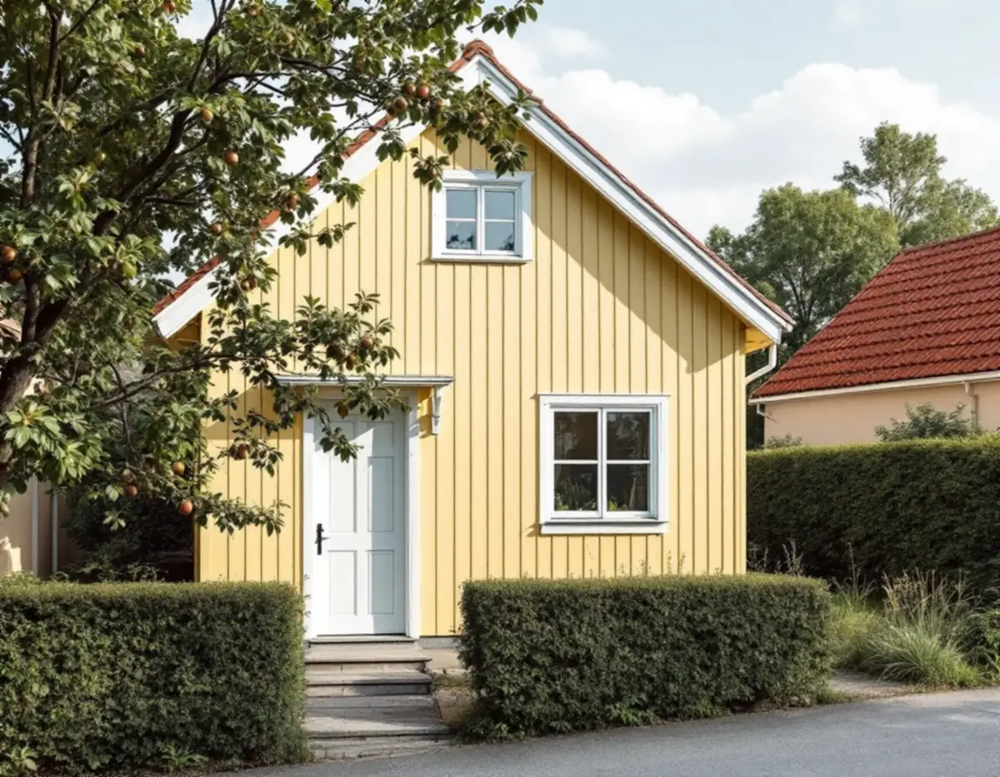
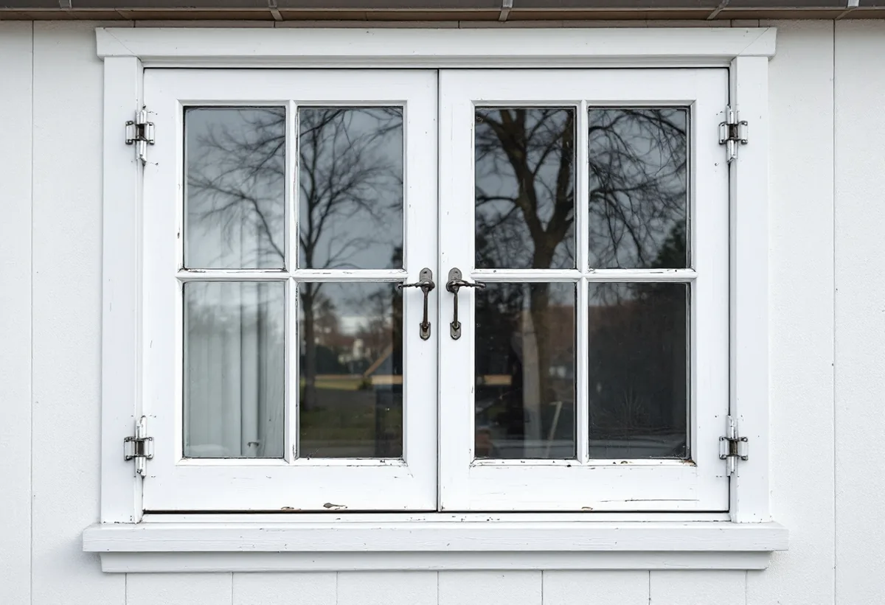
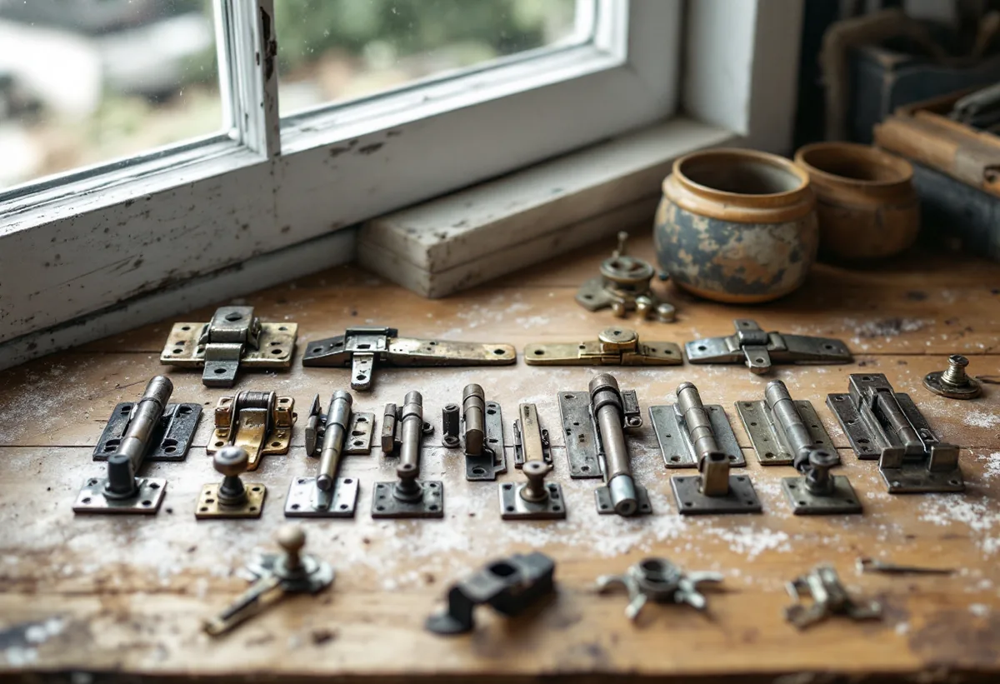

Besiktning
Fönstertyp, kitt, färg och beslag bedöms fönster för fönster.
Svedmyras småstugor byggdes på 1930-talet av familjer som själva satte ihop husen av monteringsfärdigt material, och många har kvar fönster från den tiden. De fönstren går ofta att renovera. Geal Entreprenad AB renoverar fönster på småstugor, radhus och villor i Farsta och utgår från de bågar som redan sitter i huset.

Enligt Stadsmuseets skrift om Svedmyra i serien Stockholms spår byggdes stadsdelen ut med småstugor från åren 1931–33. Småstugan var ett alternativ för familjer som inte kunde betala en kontantinsats men kunde bidra med eget arbete, och staden stod för organisation och gav genom Småstugebyrån både instruktioner och byggmaterial.
Materialet var monteringsfärdigt, och väggar och takstolar lyftes på plats i stora element för att hålla nere kostnaderna. Till den tidiga småstugekaraktären hör trähusfasadernas locklistpaneler och de röda tegeltaken, och i områdets östra del kompletterades bebyggelsen på 1950-talet med ädelputsade småstugor i dämpade gråtoner. De enkla en- och tvåvåningsstugorna ligger något indragna från gatorna, på rad efter varandra.

I tabellen i stadens strategi Varsam är del av Svedmyra och del av Sköndal markerade som kulturhistoriskt värdefulla småstugeområden, liksom Tallkrogen. Stockholms stad skriver att ändringar av fönster, som ny kulör, ändrad indelning eller andra profiler, kan kräva bygglov beroende på byggnaden, och att utökad lovplikt gäller i särskilt värdefulla områden.
Stadens områdesfakta för 2025 visar 327 småhus med äganderätt i Svedmyra och 1 194 i Sköndal. I hela Farsta stadsdelsområde finns 3 806 småhus med äganderätt.
Riksantikvarieämbetet beskriver hur funktionalismen introducerades som arkitektonisk stil omkring 1930, och hur de onödiga spröjsarna då försvann ur de nu oftast inåtgående kopplade fönsterbågarna. Det blev vanligt med ett-, två- eller treluftsfönster beroende på rummets storlek, och fönstersnickeriernas profiler förenklades.
Myndigheten påpekar också att de traditionella okopplade fönstren fortfarande var vanliga i förorternas egnahemsbebyggelse vid slutet av 1920-talet. Vilken typ som sitter i just din småstuga tar vi reda på vid besiktningen, eftersom kopplade och okopplade bågar lagas och tätas olika.
Riksantikvarieämbetet skriver att äldre kopplade bågar kan vara besvärligare än okopplade: de är ofta stora och tunga, kan sluta dåligt mot karmen och kan ha igengrodda kopplingsbeslag och skevheter. För att göra fönstren lättare att manövrera kan nya handtag och stängningsbeslag behövas.
Myndigheten råder att gamla fönsterbeslag sparas, eftersom det ofta är svårt att få tag på beslag av äldre typ som passar. Vi rengör och justerar de beslag som finns och sparar de som byts. Om fönsterbyten i Farsta kan du läsa under fönsterbyte i Farsta.
Riksantikvarieämbetet rekommenderar linoljefärg vid målning av fönster, både vid renovering och nymålning, eftersom den tränger in i virket och fäster bra, medan latexfärger lägger sig som en film på ytan och ofta ger underhållsproblem. Fönstrens underhåll består i första hand av ommålning och kittning.
Om måleri på småstugorna i Farsta kan du läsa under målare i Farsta.

Fönstertyp, kitt, färg och beslag bedöms fönster för fönster.
Stadsmuseets karta kontrolleras om något i fönstret ska ändras.
Lagningar, beslag och målning redovisas för sig.
Skrapning, lagning, kittning och linoljefärg.
Beslag rengörs och justeras, innerbågen tätas.
Vi går igenom fönstren och visar hur de sköts.
Reparation och målning av fönster på ett småhus som du äger och bor i räknas som rotarbete hos Skatteverket. Avdraget gäller arbetskostnaden.
Avdraget är högst 30 procent av arbetskostnaden, högst 50 000 kronor per person och år och högst 75 000 kronor tillsammans med rutavdrag. Material och resor ger inget avdrag. Geal drar avdraget direkt på fakturan.
Antal fönster och bågar, om de är kopplade, skador på trä och kitt, beslag och tätning. Efter ett gratis platsbesök får du ett skriftligt kostnadsförslag.
Byta eller renovera fönster.
Fönsterbyte i Stockholm →Takbyte, takbesiktning och plåtarbeten.
Takläggare i Farsta →Tallkrogens småstugor och villorna vid Magelungen.
Takrenovering i Farsta →Småstugor, kulturmiljö och gränser.
Attefallshus i Farsta →ABC-staden, radhus och asbest i våtrummet.
Badrumsrenovering i Farsta →En ny bostad i villan.
Byggföretag i Farsta →Tegel, puts, skivor och trädetaljer.
Fasadmålning i Farsta →Radhus, grupphus och fasadskivor.
Fasadrenovering i Farsta →Småstugor och radhus.
Fönsterbyte i Farsta →Linoleum, plastgolv och klinker i småstugan.
Golvläggare i Farsta →Slipa trägolvet och gå igenom resultatet.
Golvslipning i Farsta →ABC-staden, radhus och villor.
Köksrenovering i Farsta →Småstugor, ädelputs och radhus i Söderort.
Målare i Farsta →Skorstensbeslag och plåttak i Farsta.
Plåtslagare i Farsta →Förråd, gäststuga och skärmtak vid småstugan.
Snickare i Farsta →Radhusen, längan och föreningen.
Takbyte i Farsta →Tapet i 1960-talets lägenheter.
Tapetsering i Farsta →Småstugorna och typritningarna.
Totalrenovering i Farsta →